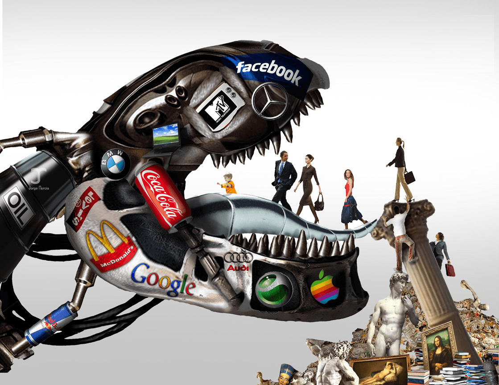

Enjoys the finer things in life, as well as pondering the purpose of it all.


If you have done all the hard work for some time, and your eyes have been opened to the current state of events, you might be left wondering what comes next. You have slept with beautiful women, gained the respect and trust of all that cross your path, and have worked on your physical and mental strength. However, if you are anything like me, at some point you might be left with a sense of incompleteness, emptiness, or some vague sense of unease.
When this happened to me in my early thirtes, I had to do some serious evaluating of who I am and how I would like to proceed in life. I realized that although I had done extensive work on myself, I had done little to affect all that I was critical about in the world . I was starting to become disillusioned and it was time to really focus on my values and further development as a man living in this world.
I began reading books on spirituality, Buddhism and Christianity. I tried to discover great and universal truths and I have spent the last years trying to apply these truths in my daily interactions. I have learned some hard lessons and have been forced to confront some unsettling truths about myself.
One of the most important lessons I have learned is that there are only two ways of experiencing life, and that is either from a place of fear or from a place of love. I cringe even as I write these words, because it has been exceedingly difficult for me to admit, but I had been experiencing life from a place of fear. Deep down, inside this physically and mentally strong, wealthy and well-respected man, there was a young boy who was scared of not being good enough. No matter how many women I slept with, how physically fit I became or how much money I made, I could never shake this sensation that I was not good enough. I started distancing myself from others, afraid that if they got too close they would see my shame and unworthiness, and reject me.
After a while, I was able to look more rationally at my fears. I began to ponder the question that if I have deep- seated feelings of not being good enough, do others struggle with this as well? And then I saw the answer to this question, everywhere.
We live in a society that is teaching men that they are not good enough, and men are struggling to convince themselves and others that they are. The media is bombarding us with the message that we are not good enough in order to make us buy stuff we don’t need, the government is making us feel like we are not good enough in order for us to work harder and buy stuff we don’t need. Society is making men feel like it’s not good enough to be a man so we can make more money to buy women stuff they don’t need.
I saw this in my close circle of friends- men trying to prove their worth because society and their parents had convinced them already in early childhood that they had to do better and be better. I saw that even though we are trying to help each other improve, we are basically telling each other in doing so, that we are not good enough as we are right now.

We all, deep down, want to feel respected, accepted and loved. I realized that I wanted these things as well, but I was actually removing myself from achieving them by building up a persona that hid parts of myself. I was scared and wondered, if I were to show the parts of myself that I tried so hard to conceal, will anyone accept and respect me then?
I decided to face my fears and consciously focused on shame; became acquainted with this dreadful companion of mine. I started to notice all the thoughts that were associated with him, as well as the physical sensations. This companion that had never been welcome in my home, was now allowed in and I was willing to get to know him. I was curious to understand his purpose, why he followed me, and what he wanted from me. As I struggled to get to know him, I slowly started to accept him as well. Through this painful and isolating process, I came to accept myself. This acceptance made me stronger than I had ever dreamt of becoming.
The struggle had been so intense and internal that I barely had any social contact other than through work during this period of time. When I had gained enough self-acceptance and realized that I am far from the only one trying to shut these feelings out from consciousness, I came to a deep understanding that I must share my experience. Since I already was a well-respected man, I figured that the message would have a strong impact coming from me. I opened up to my two closest friends who were shocked at first, but admittedly, also relieved. They too began a process of self-discovery, and they have thanked me for paving the way for them to accept themselves. I then talked to my family and other friends, and from there on it became easier. Life became easier.
I’m not going to lie, it was hella scary to confess these feelings. If someone were then to criticize or reject you, they would be criticizing or rejecting your authentic self, and your mental defenses may be weaker. However, if you take the plunge and are acknowledged and accepted despite your shortcomings (aka humanness), you are granted a deep fulfillment of being accepted for all that you are. It is YOU who is accepted and loved, and this realization is the remedy and antidote to those unsettling feelings of emptiness and discontent.
Admitting your shadow sides to yourself can be extremely painful work, let alone admitting them to others, This work is for those who want to attain self-acceptance and to stop experiencing life from a place of fear. This is the hardest path I have ever traveled, but I would never want to return to my inauthentic, albeit safe and secure, ways.